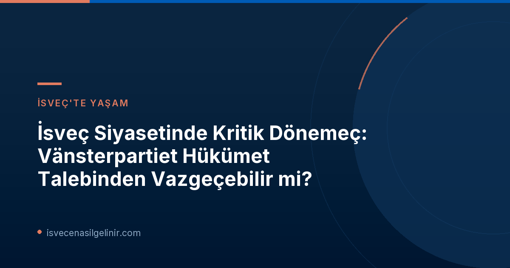

Vänsterpartiet'in Kırmızı Çizgisi ve Parti İçi Tartışmalar
İsveç'in Sol Parti'si Vänsterpartiet, genel başkan yardımcısı Ida Gabrielsson aracılığıyla, 2026 seçimleri sonrası kurulacak herhangi bir hükümete dışarıdan destek vermeyeceklerini, ancak kendileri de hükümette yer alırlarsa destek vereceklerini net bir şekilde ifade etti. Gabrielsson, bu duruşun partinin kongre kararıyla alındığını ve değiştirilemez olduğunu vurguladı.
Ancak, Södertörn Üniversitesi'nden siyaset bilimci Jenny Madestam, SVT ile yaptığı söyleşide bu iddianın aksini savunuyor. Madestam'a göre, parti kongre kararları değişmez değildir ve geçmişte de partilerin kongre kararlarının aksine hareket ettiği durumlar olmuştur. Kendisi, "Her şey siyasette mümkün" diyerek Vänsterpartiet'in bu talepten vazgeçebileceği yönündeki düşüncesini dile getirdi.
Siyaset Bilimcilerin Bakış Açısı: Kararlar ve Esneklik
Siyaset bilimciler, Vänsterpartiet'in mevcut talebinin ne kadar sürdürülebilir olduğunu farklı açılardan değerlendiriyor. Linné Üniversitesi profesörü siyaset bilimci Magnus Hagevi, parti yönetim kurulunun (partistyrelsen) kongreler arası dönemde en yüksek karar alma organı olduğunu belirtiyor. Bu, teorik olarak parti yönetiminin kongre kararlarına aykırı hareket edebileceği anlamına geliyor.
Parti Yönetim Kurulu ve Karar Alma Yetkisi
İsveç siyasetinde, parti yönetim kurulları (partistyrelsen), iki kongre dönemi arasında partinin en yüksek karar alma organı olarak işlev görür. Bu yapı, acil durumlarda veya değişen siyasi koşullara uyum sağlamak amacıyla kongre kararlarını gözden geçirme veya bunlara aykırı hareket etme yetkisine sahip olabilir. Ancak bu tür bir eylem, parti içinde "svekdebatt" (ihanet tartışması) riskini de beraberinde getirir ve taban ile liderlik arasında gerilime yol açabilir.
Bu duruma örnek olarak, Vänsterpartiet'in 2018 kongresinde aldığı silah ihracatını durdurma kararı gösteriliyor. Ancak, 2022 yılında Rusya'nın Ukrayna'yı işgalinin ardından parti yönetim kurulu bu kararı değiştirerek Ukrayna'ya silah gönderilmesine izin vermişti. Bu emsal, parti yönetiminin, siyasi koşullar gerektirdiğinde esneklik gösterebileceğini ortaya koyuyor.
Hükümet Kurma Sürecinde Vänsterpartiet'in Stratejisi
Jenny Madestam, Vänsterpartiet'in stratejisinin ne kadar politikalarında başarı elde edebileceklerine bağlı olduğunu belirtiyor. Eğer Sol Parti, hükümet dışında kalarak önemli politikalarını hayata geçirme konusunda tatmin edici kazanımlar elde edebilirse, hükümete katılma talebinden vazgeçmeyi düşünebilirler. Bu, özellikle Sosyal Demokrat lider Magdalena Andersson'un Centerpartiet (C) ve Miljöpartiet (MP) ile Vänsterpartiet olmadan bir hükümet kurma arayışında olduğu bir dönemde kritik bir faktör.
Ancak bu senaryo, başka zorlukları da beraberinde getiriyor. Özellikle Centerpartiet ile olası bir iş birliğinde, Vänsterpartiet'in bazı temel talepleri, örneğin bir milyarder vergisi getirilmesi, Centerpartiet için kabul edilemez olabilir. Centerpartiet'in önceliği bakanlık pozisyonları olsa da, Vänsterpartiet'in belirli politika dayatmaları koalisyon görüşmelerini çıkmaza sokabilir. Bu siyasi pazarlıklar, İsveç'teki göçmenlik ve vatandaşlık süreçleriyle ilgili politikaların belirlenmesinde de önemli bir rol oynayabilir. İsveç vatandaşlığına dair güncel bilgiler ve test süreçleri hakkında detaylı bilgi almak için sverigemedborgarskapsprov.com adresini ziyaret edebilirsiniz.
Olası Senaryolar ve İsveç Siyasetine Etkileri
Vänsterpartiet'in hükümet talebinden vazgeçmesi veya bu talebinde ısrar etmesi, İsveç siyasetinde farklı senaryoları beraberinde getirecektir. Eğer Sol Parti esneklik gösterirse, Magdalena Andersson liderliğindeki bir hükümetin kurulması daha olası hale gelebilir. Ancak bu durum, partinin kendi tabanında "ihanet" algısı oluşturma riskini taşır.
Diğer yandan, Vänsterpartiet'in talebinde ısrar etmesi, hükümet kurma sürecini daha da karmaşık hale getirebilir ve potansiyel olarak erken seçim veya daha uzun süreli bir siyasi belirsizlik dönemine yol açabilir. İsveç siyasetindeki bu tür dalgalanmalar, ülke ekonomisinden sosyal politikalara kadar birçok alanı etkileyebilir ve dolaylı olarak İsveç'te yaşayan veya yaşamayı düşünen bireyler için de sonuçlar doğurabilir.
Referanslar:
- SVT Nyheter Inrikes: https://www.svt.se/nyheter/inrikes/statsvetare-da-kan-v-overge-regeringskravet
- İsveç Vatandaşlık Bilgileri: sverigemedborgarskapsprov.com
İsveç Siyasetini ve Göçmenlik Süreçlerini Yakından Takip Edin!
İsveç'teki siyasi gelişmeler, yaşam koşulları ve vatandaşlık süreçleri hakkında en güncel ve doğru bilgilere ulaşmak için bizi takip edin. İsveç vatandaşlık testine hazırlanmak veya göçmenlik adımlarınızı planlamak için kaynaklarımızı keşfedin.